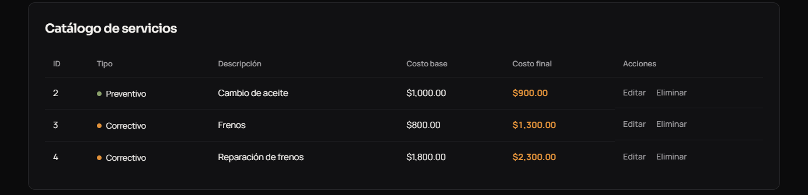
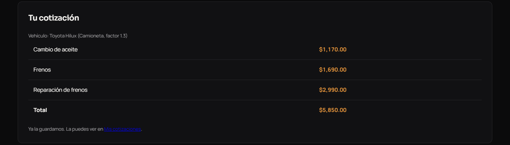
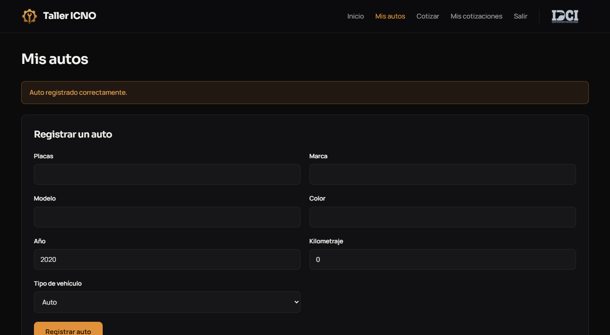
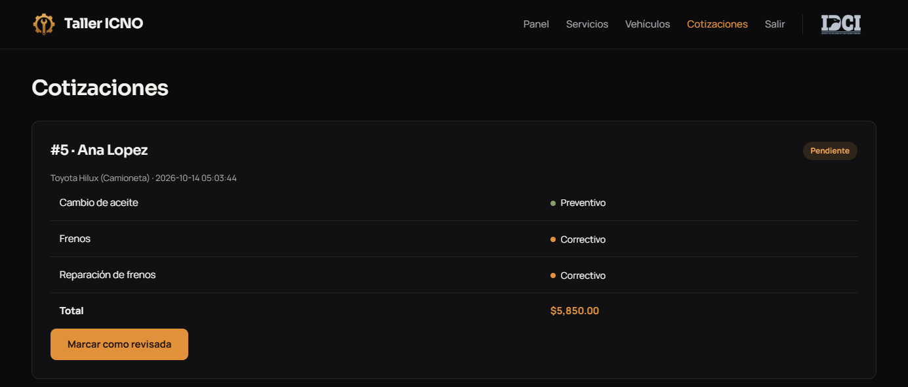

Taller ICNO administra un taller mecánico desde el navegador. Un cliente se registra, da de alta sus
vehículos y pide cotizaciones eligiendo los servicios que necesita. El administrador mantiene el catálogo
de servicios (el CRUD), consulta los vehículos de los clientes y revisa las cotizaciones. Los datos se guardan en una
base de datos MySQL con cinco tablas; la clase Taller es la única que habla con ella y convierte cada fila en
un objeto, de modo que el resto del sistema trabaja solo con objetos.
El taller tiene dos realidades que comparten datos pero se comportan distinto, y eso es exactamente lo que resuelve
la herencia. La primera son los servicios: un preventivo y un correctivo tienen id, descripción y costo base,
pero cobran diferente. Por eso existe la clase padre Servicio con lo común, y dos hijas que la extienden:
ServicioPreventivo agrega el kilometraje y ServicioCorrectivo agrega las horas de mano de obra.
Cada hija llama a parent::__construct() para que el padre guarde lo suyo y no se repita código.
La segunda son los vehículos: Vehiculo guarda placas, marca, modelo, color, año y kilometraje, y
sus cuatro hijas Auto, Camioneta, Camion y Motocicleta no agregan datos,
solo cambian el comportamiento. Con esto se ve que heredar sirve para dos cosas: reutilizar lo que ya tiene el padre y dejar que
cada tipo responda a su manera.
Esa respuesta distinta es el polimorfismo. calcularCosto() está en Servicio y cada hija lo
reescribe con #[\Override]: el preventivo aplica 10% de descuento y el correctivo suma 250 pesos por hora.
getFactor() está en Vehiculo y cada hija devuelve su factor: 1.0, 1.3, 1.6 y 0.7. Los dos se juntan
en una sola línea de crearCotizacion(), que no pregunta de qué tipo es nada:
$total += $s->calcularCosto() * $vehiculo->getFactor(); // PHP llama la version correcta segun la clase real
Un correctivo de $1,800 con 2 horas en una camioneta cuesta (1,800 + 500) × 1.3 = $2,990, como se ve en la captura
de la hoja 3. Al leer la base de datos, Taller mira la columna tipo y crea el objeto de la clase hija
correcta, así la herencia se conserva aunque los datos vivan en una tabla.
Todos los atributos de las once clases son private. Nadie de afuera los modifica directo: para leerlos
hay getters y para cambiarlos hay setters, y dentro de los setters se usa $this para indicar que se modifica el
dato de ese objeto en particular. Por ejemplo, el costo base solo cambia con setCostoBase(); si mañana hay
que validar que no sea negativo, se hace en ese único lugar. El caso más claro es Taller: su conexión
$bd es privada, ninguna página escribe SQL, y todas las consultas usan prepare() con parámetros
? para evitar inyección SQL. La contraseña de los usuarios se guarda cifrada con password_hash()
y los datos de conexión viven en inc/config.php, fuera del repositorio.
| Requisito | Dónde está (todo en inc/taller.php) |
|---|---|
| R1 · 4+ clases | 11 clases: Servicio, ServicioPreventivo, ServicioCorrectivo, Vehiculo, Auto, Camioneta, Camion, Motocicleta, Usuario, Cotizacion, Taller. |
| R2 · Encapsulamiento | Atributos private con getters y setters que usan $this. |
| R3 · Herencia | Dos jerarquías con extends: Servicio → 2 hijas; Vehiculo → 4 hijas. |
| R4 · Polimorfismo | calcularCosto() y getFactor() reescritos con #[\Override] y resultado distinto en cada hija. |
| R5 · CRUD | agregarServicio() INSERT, getServicios() SELECT, modificarServicio() UPDATE, eliminarServicio() DELETE; se usan desde servicios.php. |
| R6 · UML | documentacion/diagrama_uml.pdf, con las 11 clases, atributos, métodos y relaciones. |
Usé una herramienta de inteligencia artificial como apoyo para resolver dudas, depurar errores, mejorar el diseño visual y revisar la documentación, como lo permite el reglamento del proyecto. El diseño de las clases, las pruebas de funcionamiento y esta explicación los trabajé y los entiendo; el código está comentado línea por línea para poder explicar cualquier parte en la revisión.

Catálogo de servicios del administrador (R5). El costo final lo calcula cada clase con su propia fórmula: el preventivo de $1,000 baja a $900 y el correctivo de $1,800 con 2 horas sube a $2,300. Cada fila tiene Editar y Eliminar.

Cotización de un cliente para una camioneta (factor 1.3). Cada subtotal es calcularCosto() × getFactor():
el correctivo de $2,300 queda en $2,990. Aquí se ven los dos polimorfismos a la vez.

El cliente registra su vehículo y elige el tipo; según el tipo se crea un Auto, Camioneta, Camion o Motocicleta.

El administrador ve las cotizaciones con su estado y las marca como revisadas.
Portada pública en https://taller.navmac.com, desde donde el cliente crea su cuenta.